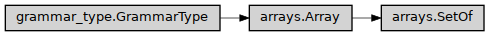

SetOf
- class ase2sprkkr.common.grammar_types.arrays.SetOf(type, default_value=None, length=None, max_length=None, min_length=None, as_list=False, format=None, **kwargs)[source]
Set of values of the same type. E.g. {1,2,3}
Class hierarchy
Constructor
- __init__(type, default_value=None, length=None, max_length=None, min_length=None, as_list=False, format=None, **kwargs)[source]
- Parameters
type – The grammar type of the values in the list (it can be given by a python type)
default_value – The default value for the list
length – If it is set, the list have to have just this length (it sets
min_andmax_lengthto thelength)min_length – The minimal allowed length of the list.
max_length – The maximal allowed length of the list.
as_list – Type of the value array. True means List, False means np.ndarray, or custom type (e.g. tuple) can be provided. However, the value can be set using tuple or list anyway.
- delimiter = [,; ]
- Parameters
name (Optional[str]) –
- Return type
ParserElement
- delimiter_str = ','